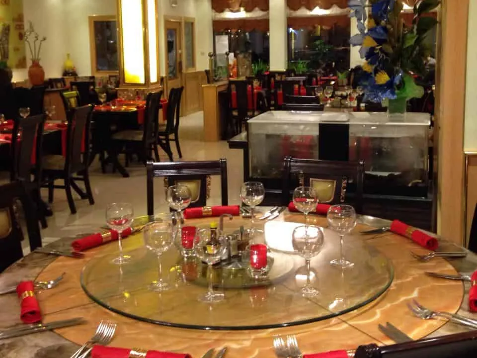
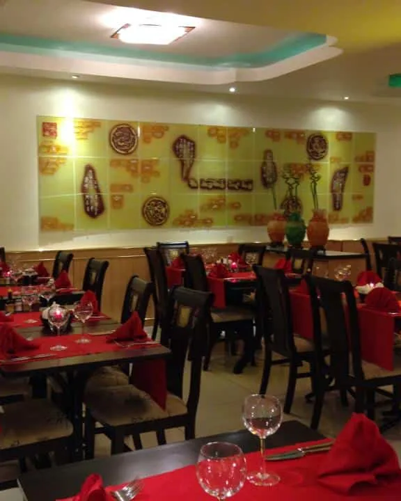
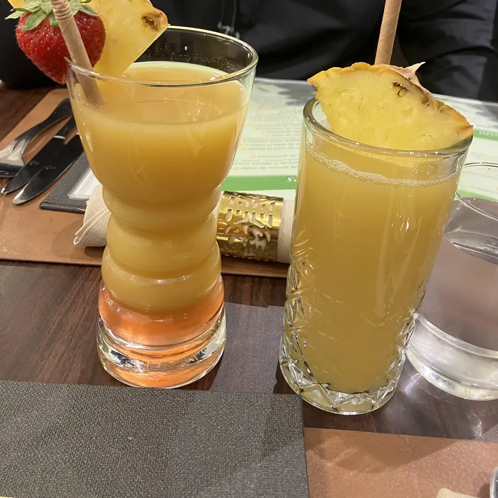
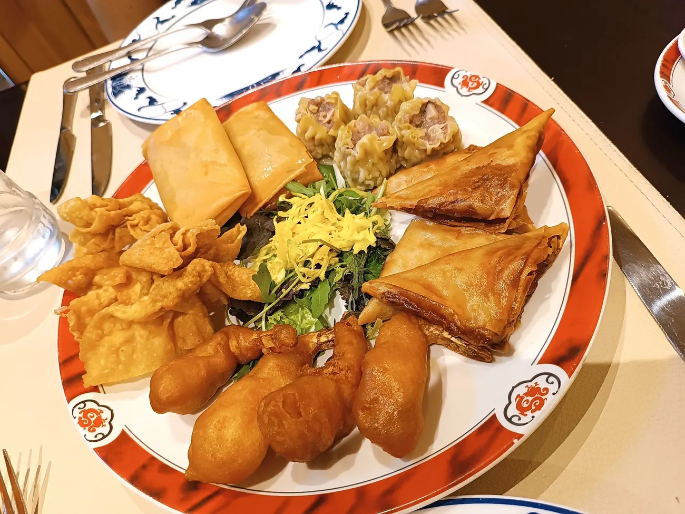
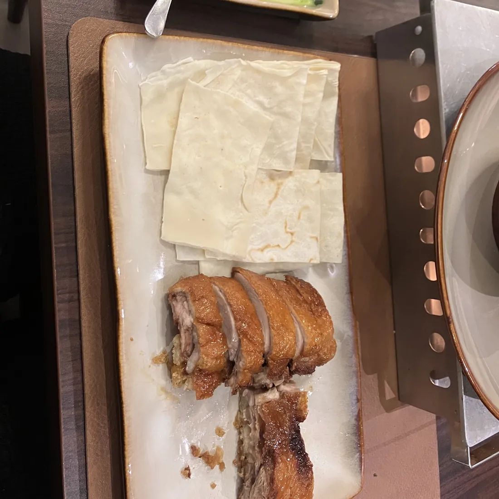
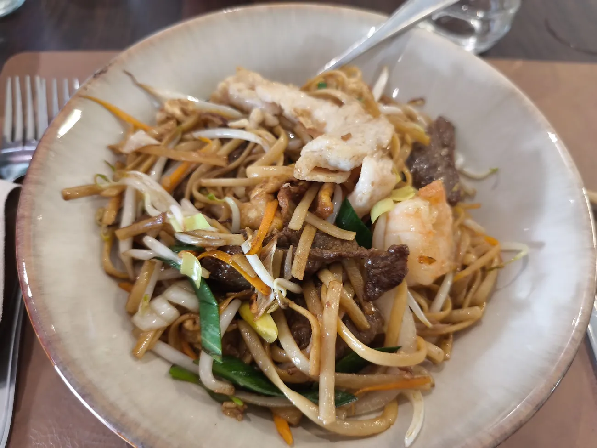
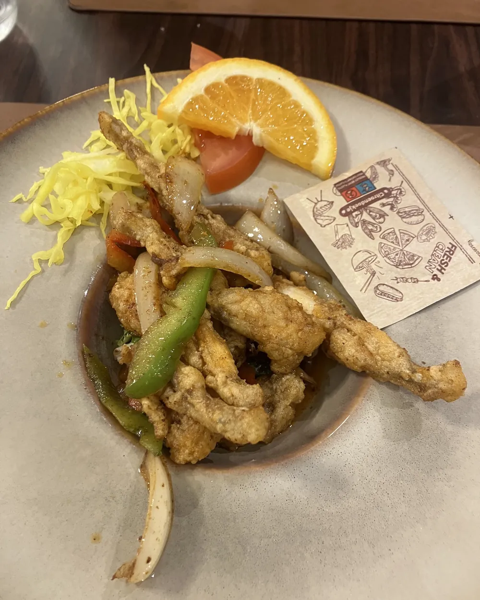
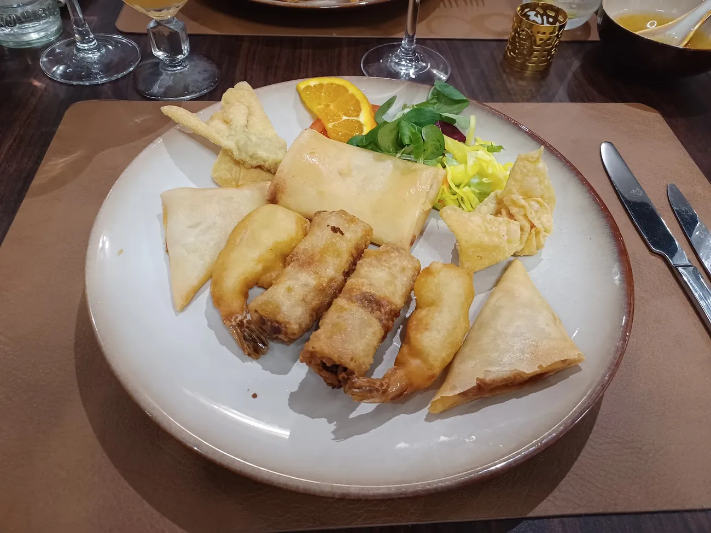

La Table du MandarinLe meilleur de la cuisine traditionnelle chinoise, sur la Grand-Place.
Canard laqué de Pékin, dim sum à la vapeur, scampis sur plat Ti-pan, nouilles façon « mandarin » : plus de cent plats, une salle qui reçoit jusqu'à 150 personnes, sous l'enseigne au néon rouge.
« […] nourriture délicieuse, service chaleureux ! »
64Canard laqué de Pékin29Shao mai30Ha kao41Scampis façon « mandarin » sur Ti-pan80Marmite aux fruits de mer6Potage aux raviolis chinois77Bœuf « Hangzhou »107Nouilles façon « mandarin »64Canard laqué de Pékin29Shao mai30Ha kao41Scampis façon « mandarin » sur Ti-pan80Marmite aux fruits de mer6Potage aux raviolis chinois77Bœuf « Hangzhou »107Nouilles façon « mandarin »
La maison
Jusqu'à 150 convives, et une table qui tourne
Derrière l'enseigne rouge, une décoration raffinée et une salle qui peut accueillir jusqu'à 150 personnes. Les grandes tablées s'installent autour du plateau tournant en verre : chacun fait tourner les plats vers soi. Une carte des vins variée, de bon rapport qualité-prix, et la terrasse quand la météo le permet.
« Ambiance agréable. Serveuses souriantes et sympathiques. Le repas était excellent. […] »Orane, avis Google

Le plateau tournant

La salle principale

À l'apéritif
4,4Sur 5, d'après 564 avis Google
150Personnes accueillies en salle
5 j / 7Midi et soir, jusqu'à 23 h
−10 %Sur toute la carte à emporter
La carte
Du dim sum au canard laqué, plus de cent plats
Potages, dim sum à la vapeur, crustacés, canard, plats Ti-pan et spécialités du Sichuan. Les numéros sont ceux de la carte de la maison.

Les délices croustillants

Canard laqué et crêpes fines

Nouilles sautéesPotage aux raviolis

Sauté aux poivrons

Rouleaux et beignets
Faites glisser : photos prises à table par les clients
Potages et dim sum
Dim sum cuits à la vapeur
6.Potage aux raviolis chinois7,00 €
4.Potage piquant5,50 €
29.Shao maifarcis de scampis et viande10,00 €
30.Ha kaoraviolis aux scampis11,00 €
33.Les 5 spécialités chinoises17,00 €
13.Assortiment de 5 délices croustillants17,00 €
Canard et Ti-pan
Le canard laqué, sept façons
64.Canard laqué spécial de « Pékin »22,00 €
65.Canard laqué à l'orange21,00 €
94.Canard laqué spécial « si-chuan »21,00 €
41.Scampis façon « mandarin » sur plat Ti-pan20,00 €
77.Lamelles de bœuf « Hangzhou » Ti-pan17,50 €
80.Marmite garnie aux fruits de mer23,00 €
Riz et nouilles
Au poulet, au bœuf, aux scampis ou les trois
107.Nouilles sautées façon « mandarin »bœuf, poulet et scampis16,00 €
104.Nouilles sautées au poulet13,00 €
91.Vermicelles de riz façon « mandarin »17,00 €
103.Riz sauté façon « mandarin »16,00 €
V1.Nouilles sautées aux légumesplat végétarien11,00 €
109.Riz cantonnais7,00 €
relevéExtrait du dépliant 2025 de la maison. Toute la carte au 065 77 82 52.
Potage, entrée, un plateau de quatre plats à partager, puis le dessert. Jean-Marc, venu à dix-sept, résume : « chouettes menus et bons plats à la carte ».
Le menu de la maison
Menu Table du Mandarin
42,00 €par personne · min. 2
Gambas aux 5 épices, potage au choix, assortiment de 5 délices croustillants, puis le plateau : canard laqué sauce aigre-douce, lamelles de bœuf aux légumes, scampis sautés à l'ail, filet de sole sauce huître. Dessert au choix.
Le classique
Menu Table de riz
34,00 €par personne · min. 2
Potage au choix, 5 délices croustillants et salade de soja, puis le plateau : scampis sautés à l'ail, canard laqué aux légumes, beignets de poulet aigre-douce, bœuf aux oignons et poivrons. Dessert au choix.
Pour fêter
Menu anniversaire
40,00 €par personne · min. 2
Cuisses de grenouilles aux 5 épices, potage, 3 spécialités chinoises à la vapeur, puis le plateau : beignets de scampis, canard laqué aigre-douce, bœuf aux légumes, poulet « si-chuan ». Dessert au choix.
Un plat au choix
Menu Ti-pan
32,50 €par personne
Potage, croustillants, puis un plat parmi sept : scampis façon « mandarin », bœuf « Hangzhou », ou calamars, bœuf, poulet, canard et scampis « si-chuan ». Dessert au choix.
Pour les petits
Menu enfant
17,00 €par enfant
Potage ou brochettes, puis beignets de poulet aigre-douce, nouilles ou riz sautés au poulet, ou steak-frites. Glace pour finir.
Prix du dépliant 2025 de la maison.
Groupes et fêtes
Une table de dix-sept pour un anniversaire
Pour les grandes tablées, la maison a sa salle de banquet. Un anniversaire, une fête ? Un coup de fil, et la table est dressée pour vous.
« […] Table de 17 personnes ( anniversaire) ! Très bon accueil, bien servis, chouettes menus et bons plats à la carte. »
Jean-Marc F., avis Google · venu un vendredi d'août 2023
Une salle de banquet pour les grands groupes, à côté de la salle principale.
Menu anniversaire à 40 € par personne, des grenouilles aux 5 épices au dessert.